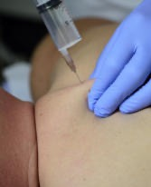

Heilpraktikerin in Bad Schönborn · Kraichgau
Alle Werte in Ordnung — und Ihnen geht es trotzdem nicht gut?
Dann fehlt meist nicht der Befund, sondern die Ursache. Ich nehme mir die Zeit, Ihren Körper, Ihren Stoffwechsel und Ihre Seele zusammen zu betrachten — mit ausführlicher Labordiagnostik und Psychosomatischer Energetik.
30 Minuten, kostenfrei unverbindlich, ohne Behandlung


Kommt Ihnen das bekannt vor?
Sie waren überall — und nirgends hat jemand richtig hingeschaut.
Die meisten Menschen kommen zu mir, nachdem sie schon eine lange Runde hinter sich haben. Ein Punkt genügt.
- Dauerhafte Erschöpfung und Müdigkeit
- Schlafstörungen, innere Unruhe
- Migräne, wiederkehrende Kopfschmerzen
- Blähbauch, Reizdarm, Verdauung
- Schilddrüse: Hashimoto, Unter-, Überfunktion
- Schmerzen ohne erkennbaren Befund
- Gewicht, das sich nicht bewegen lässt
- Ihr Kind ist unruhig oder zieht sich zurück
Im kostenlosen Vorgespräch klären wir in Ruhe, ob und wie ich Ihnen helfen kann.
Vorgespräch vereinbarenPraxisschwerpunkte
Sechs Wege, auf denen wir zur Ursache kommen
Körper & Seele — PSE
Psychosomatische Energetik nach Dr. Banis: Wir spüren den seelischen Konflikt auf, der Ihnen Lebensenergie entzieht — ohne dass Sie alles aussprechen müssen.
Methode ansehen
Vital- & Stoffwechselanalyse
42 bis 70 Blutwerte zeigen, wie Ihr Körper Energie gewinnt, entgiftet und regeneriert. Daraus entsteht Ihr Plan — kein Diätblatt von der Stange.
Werte & Ablauf
Erschöpfung & Dauerstress
„Es wird mir alles zu viel.“ Wer besonders müde in die Praxis kommt, berichtet oft schon nach wenigen Wochen von mehr Kraft und besserem Schlaf.
Mehr erfahren
Kinder & Jugendliche
Unruhe, Konzentrationsprobleme, ADHS, Rückzug. Kinder reagieren auf PSE besonders schnell — häufig verändert sich zuerst das Miteinander in der Familie.
Für Eltern
Mit Genuss zum Wunschgewicht
Abnehmen über Stoffwechsel und Darmgesundheit statt über Verzicht: individueller Plan nach Stoffwechseltyp und Hormonlage, mit Begleitung.
Konzept ansehen
Entspannung pur
Klangschalenmassage, energetische Heilmassage, Fußreflexzonen- und Sportmassage — als eigene Auszeit oder als Begleitung Ihrer Therapie.
Massagen ansehenSo läuft es ab
Drei Schritte — und Sie wissen, woran Sie sind
Kein Abo, kein Paket. Nach jedem Schritt entscheiden Sie, ob Sie weitergehen möchten.
Vorgespräch
Sie schildern mir Ihr Anliegen, ich sage Ihnen offen, ob und mit welchen Methoden ich helfen kann. Am Telefon oder persönlich.
Erstanamnese
Ausführliches Gespräch und Untersuchung, dazu je nach Bedarf Blut-, Speichel- oder Stuhlanalyse. Bringen Sie vorhandene Laborwerte gerne mit.
Therapieplan
Sie erhalten Therapie- und Kostenplan, bevor behandelt wird. Danach begleite ich Sie in Ihrem Tempo, mit festen Kontrollterminen.
Über mich
Cornelia Dinger, Heilpraktikerin
Bevor ich Heilpraktikerin wurde, habe ich viele Jahre in der Altenpflege, in der Psychiatrie und in der Begleitung schwerstbehinderter Menschen gearbeitet. Dort habe ich gelernt, was in keinem Laborwert steht: dass Beschwerden fast immer eine Geschichte haben.
Heute verbinde ich beides — messbare Diagnostik und den Blick auf das, was seelisch belastet. Mit Freude und Leidenschaft unterstütze ich Sie darin, Ihre Selbstheilungskräfte zu aktivieren.
Es kommt darauf an, den Körper durch die Seele und die Seele durch den Körper zu heilen. Oscar Wilde
- Heilpraktikerinseit 2017
- Psychologische Heilpraktikerinseit 1999
- Psychologische Lebensberatung, Regressions- & Traumaarbeit3 Jahre
- Systemische AufstellungsarbeitBertold Ulsamer
- KlangschalentherapieFrank Plate
- Marte Meo Practitionerzertifiziert
- Examinierte Altenpflegerin, Psychiatrie & ambulante Pflegeviele Jahre
- Bund Deutscher Heilpraktiker · Kneipp-Verein · Laborgemeinschaft für ganzheitliche MedizinMitglied
Diagnostik & Therapien
Je genauer die Diagnostik, desto besser der Therapieplan
Eine ausführliche Diagnostik ist unerlässlich — sie ist die Grundlage jeder Behandlung, nicht ein Zusatz.
Diagnostik
- Ihr BlutGanzheitliche Laboranalyse, 42–70 Werte
- Speicheltest Geno-LineGenetischer Stoffwechseltyp
- KinesiologieMuskeltestung zur Verträglichkeit
- StuhlanalyseDarmflora, Zonulin, Leaky Gut
Therapien

Injektions- & InfusionstherapieVitamine, Aminosäuren, Mesotherapie- PhytotherapiePflanzenheilkunde, individuell rezeptiert
- OzontherapieSauerstoff- und Durchblutungstherapie
- InduktionsbioresonanzRegulation über Frequenzmuster
Patientinnen berichten
Was sich für andere verändert hat
„Meine innere Unruhe war so groß, dass ich sogar in Ruhephasen Muskelzuckungen hatte. Heute bin ich ruhiger, spüre meine Familie wieder — und mein Asthma ist verschwunden.“Carolin48 Jahre · PSE
„Ich wollte gar nicht mehr essen, weil alles wieder hochkam. Nach PSE und Stoffwechseloptimierung ist der Blutdruck gut, die Energie zurück — und ich kann wieder mit Freude essen.“Heidi50 Jahre · PSE & Stoffwechselanalyse
„Eigentlich kam ich wegen meines Sohnes. Aber Frau Dinger hat sofort erkannt, wie krank ich selbst war. Die morgendlichen Schmerzen in Händen, Knien und Füßen sind weg.“Petra36 Jahre · PSE & Stoffwechsel
Kosten & Kasse
Transparent, bevor behandelt wird
- Vorgesprächca. 30 Minuten, telefonisch oder persönlichkostenfrei
- Erstanamnese & Untersuchungca. 1,5 Stunden inkl. AuswertungBetrag einsetzen
- Folgeterminje nach Methode und DauerBetrag einsetzen
- LaboranalysenAbrechnung direkt über das Labornach Aufwand
Abrechnung nach der Gebührenordnung für Heilpraktiker. Private Kassen und Zusatzversicherungen erstatten häufig; gesetzliche Kassen bezuschussen oft über Bonusprogramme.
Häufige Fragen
Das fragen mich fast alle
Zahlt meine Krankenkasse die Behandlung?
Privatversicherte und Patient:innen mit Heilpraktiker-Zusatzversicherung erhalten die Kosten je nach Tarif ganz oder teilweise zurück. Gesetzliche Kassen übernehmen die Behandlung nicht direkt, bezuschussen sie aber oft über Bonus- oder Wahltarife. Fragen Sie kurz bei Ihrer Kasse nach — Sie erhalten von mir eine Rechnung nach der Gebührenordnung für Heilpraktiker.
Was passiert beim ersten Termin?
Wir nehmen uns rund 1,5 Stunden Zeit. Ich höre zu, frage nach Ihrer Vorgeschichte, untersuche Sie und sehe mir vorhandene Laborwerte an. Bringen Sie deshalb gerne alle Befunde mit, die Sie haben. Behandelt wird erst, wenn Sie den Therapie- und Kostenplan kennen.
Muss ich über belastende Themen sprechen?
Nein. Genau das ist die Stärke der Psychosomatischen Energetik: Der seelische Konflikt wird über Testung ermittelt und mit homöopathischen Komplexmitteln gelöst. Sie müssen schmerzhafte Erlebnisse nicht erzählen, um sie loszulassen.
Wie schnell merke ich eine Veränderung?
Das ist individuell. Viele Klient:innen, die besonders müde und erschöpft kommen, berichten schon nach wenigen Wochen von mehr Lebensenergie und besserem Schlaf. Chronische Beschwerden brauchen erfahrungsgemäß mehrere Monate Begleitung.
Ersetzen Sie meine Ärztin oder meinen Arzt?
Nein. Ich arbeite ergänzend zur schulmedizinischen Behandlung und rate niemandem, verordnete Medikamente eigenmächtig abzusetzen. Wo eine ärztliche Abklärung nötig ist, sage ich Ihnen das deutlich.
Kontakt & Anfahrt
Lassen Sie uns 30 Minuten sprechen
Ein persönliches Gespräch ist durch nichts ersetzbar. Termine finden ausschließlich nach Vereinbarung statt, damit ich genügend Zeit für Sie habe.
- Naturheilpraxis Cornelia Dinger
Schubertstraße 7
76669 Bad Schönborn - 0171 124 27 17
- info@naturheilpraxis-dinger.de
- Termine nur nach Vereinbarung
Zeiten stimmen wir im Vorgespräch ab
Hinweis gemäß § 3 Heilmittelwerbegesetz: Bei vielen naturheilkundlichen Behandlungsmethoden handelt es sich um Verfahren der Erfahrungsmedizin, die wissenschaftlich nicht anerkannt sind.